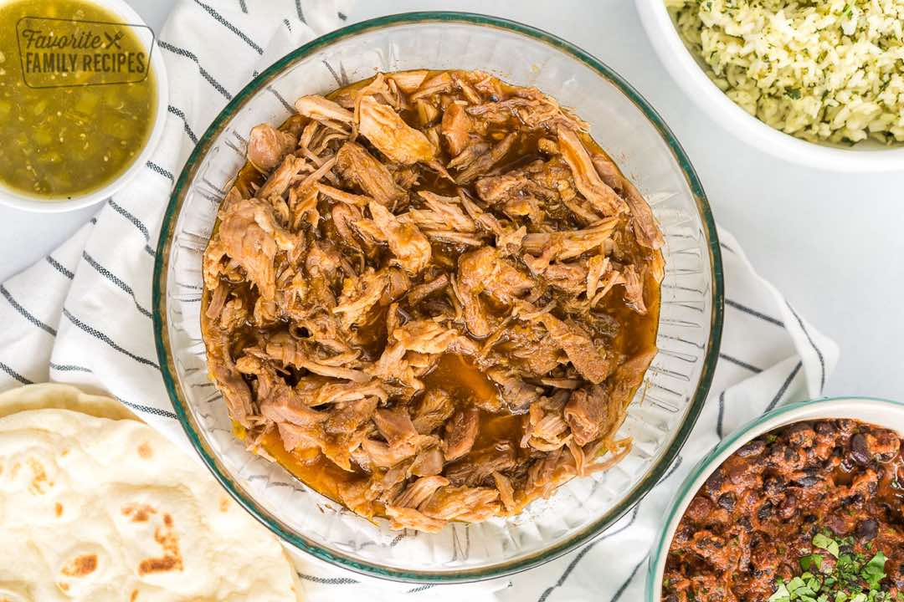

Cafe Rio Sweet Pork Copycat Recipe
Main Dish
Servings10
PrepPT15M
CookPT10H

Ingredients
- 2 pounds pork ((boneless ribs or pork roast will work great))
- 3 (12-ounce) cans Coca-Cola (not diet)
- ¼ cup brown sugar
- dash garlic salt
- ¼ cup water
- 1 can diced green chilies
- 1 (10-ounce) red enchilada sauce
- 1 cup brown sugar
Directions
- Put the pork in a heavy-duty zip-top plastic bag to marinate. Add about a can and a half of Coke and ¼ cup of brown sugar. Marinate for 4 hours or overnight.
- Drain the marinade and put pork, ½ can of Coke, water, and garlic salt in a slow cooker on high for about 3-4 hours or on low for 8 hours. (You want the meat to shred easily, but not be too dry.)
- Remove pork from the slow cooker and discard any liquid left in the pot. Shred pork.
- In a food processor or blender, blend ½ a can of Coke, chilies, enchilada sauce, and 1 cup brown sugar. If the mixture looks too thick, add more Coke little by little. Put shredded pork and sauce in a slow cooker and cook on low for 2 hours.
Source
https://www.favfamilyrecipes.com/cafe-rio-sweet-pork/
This page includes Schema.org Recipe structured data for recipe importers.